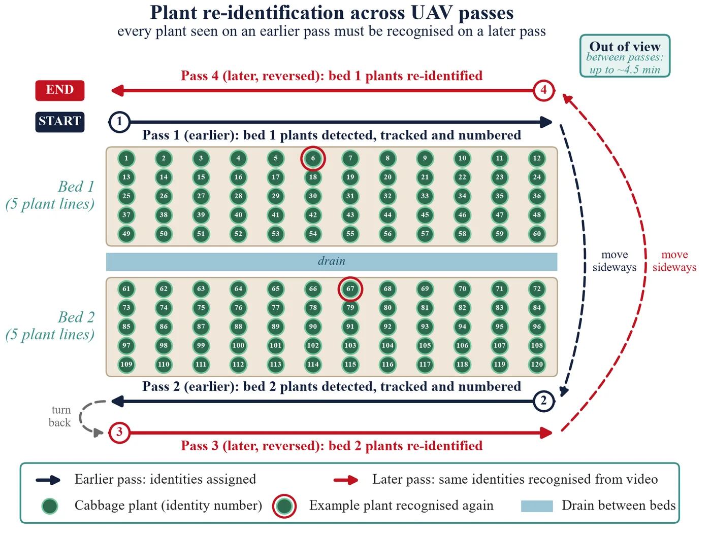
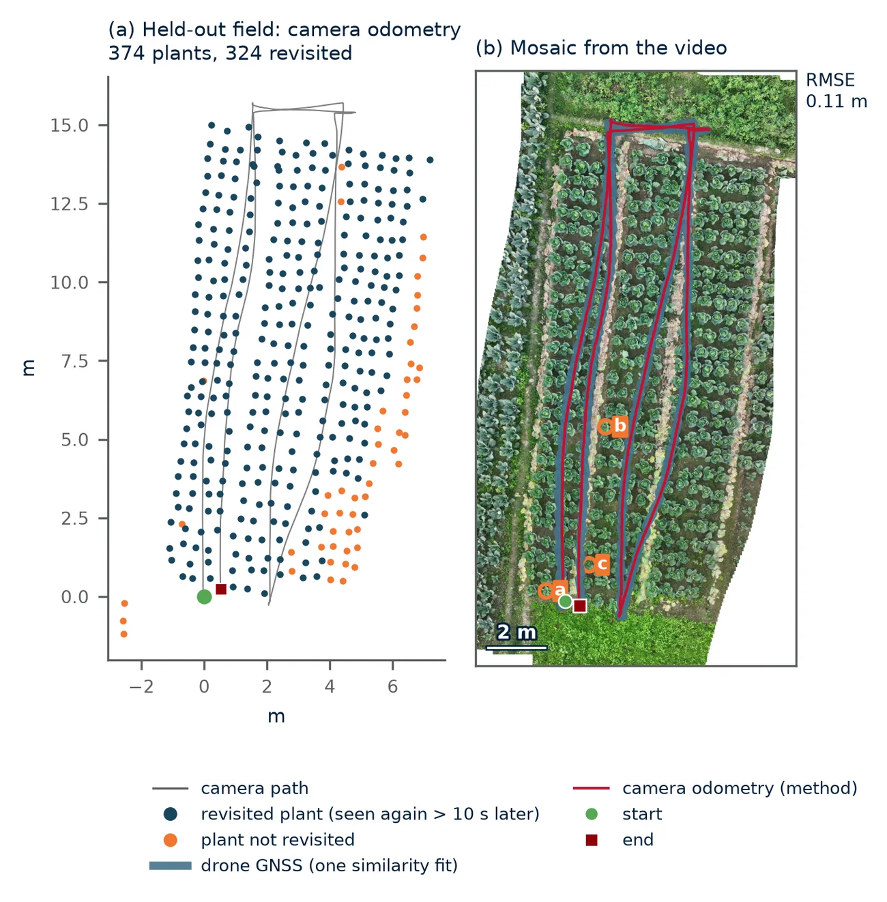
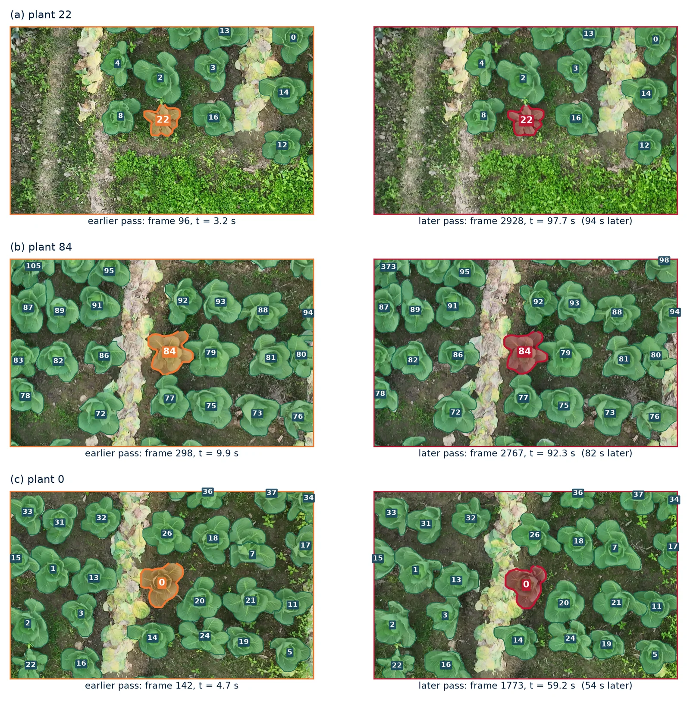
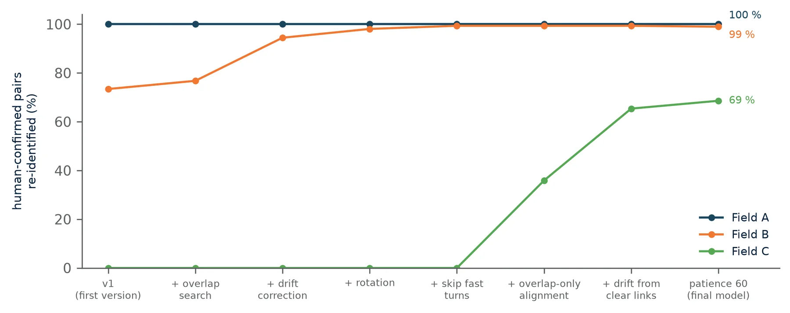

Overview
Cabbage plants are visually near-identical, so a plant's identity cannot come from its appearance. It has to come from where it is, and a crop field offers few landmarks to fix that position. Storing GNSS coordinates does not solve it either: without RTK correction the drone used here holds its position only to about ±0.5 m, roughly the spacing between neighbouring cabbages.
CabbageTrack segments plants with YOLOv9c-seg, tracks them within each pass with BoT-SORT, and follows the drone's movement by phase correlation of consecutive video frames. That path drifts, and placing the remembered plants by the path alone re-identified only 75 % of sampled plants. So the path is used only to find earlier views of the same ground. For each such view, the shift between the two images is measured directly by phase correlation after correcting the camera rotation, and the remembered plants are moved by that measured shift. This one change raised re-identification to 93 %.
The system was developed on three flights over cabbage and cauliflower, frozen, and run once on a held-out flight over a new cabbage field. All flights were flown by hand with a DJI Mavic 3E at commercial vegetable fields near Sylhet, so they include the speed changes, sideways drift and turns of real field work.


Key Results
- Held-out test, run once: 90 of 91 plants sampled blindly by human annotators were re-identified (98.9 %, 95 % CI 94.0–99.8 %), and 601 of the method's 611 links between passes were judged correct (98.4 %). The sample is independent of the method, and the model was not changed after the run.
- Registration is the decisive step. Over 549 blind plants on four flights, moving the remembered plants by the measured shift instead of the predicted one lifted re-identification from 74.5 % to 93.3 %. A constant-velocity flight plan or the GNSS track could stand in for the visual odometry as the coarse map, but only when this verification and registration were kept.
- Vision beats the drone's own GNSS log. Using the logged GNSS alone, only 61.7 % of blind plants were re-identified, against 93.3 % for the video-only method. The logged height refers to the take-off point, not the crop (2.3 m logged against 4.0 m true on the held-out flight), so the field came out about 1.6 times too long and only 15 of 91 plants were recovered, against 90.
- Accurate maps from video alone. After one similarity fit per flight, the camera path stayed within 0.11–0.71 m (RMSE) of the GNSS track, and over 10 s windows it drifted by only 2.0–4.6 % of the distance travelled. GNSS and vision turn out to be complementary: GNSS says where the vehicle is, the image registration says which plant is in view.
- Each component answers a real flight condition. On the three development flights the final model re-identified 299/299, 80/85 and 43/74 sampled plants. Searching by image overlap, drift correction, rotation correction, and overlap-only alignment each fixed a specific failure found by tracing missed plants, and each was needed on a different flight.
- A clear limit. On the cauliflower flight, where two passes share only about a quarter of the image, aligning the overlapping strip was too coarse to place individual plants (43 of 74 re-identified, 13 of 63 different-plant pairs wrongly joined).




Limits and Next Steps
This is a proof of concept: four flights at one site, two crops, in daylight during one season. The held-out test is a single flight, and its detector had been trained on frames of that flight, so a second held-out flight with a detector that has never seen it is the next test. The method currently runs at about 7 frames per second on a consumer GPU, which suits post-survey analysis; running it on board a drone, coupling the video map with GNSS where the signal is poor, and transfer to other row crops remain future work.
Status
This manuscript was submitted to Computers and Electronics in Agriculture and is being revised in response to reviewer comments. This page summarises the revised version, which has a new title and a new held-out evaluation, so the numbers differ from the originally submitted draft. They may still change before publication.